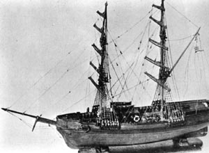

Jeudi 25 Les maisons du 56 et 58 Reverdy road, à
Dermondsey, furent assaillies de pierres et autres missiles venant d'un coin indéterminé. 2 enfants furent
blessés, chaque fenêtre des 2 maisons brisée et plusieurs articles de fourniture détruits. Bien qu'il y eut un
solide corps de policiers répartis dans les environs et un cordon d'entre eux jeté autour des maisons en
question peu après 8 h, ils ne purent trouvé aucune trace de la course du bombardement et ne purent découvrir
aucun indice qui apporterait la moindre lumière sur le mystère. Des témoins occulaires déclarèrent que les
pierres semblaient presque vivantesLondon Times, Dimanche 28 avril 1872 < "Mystery of the "Red Rains" in Japan", The Fresno Bee de Fresno (Californie), 1925-10-11.
Mai
En Pennsylvanie, on observe des trains fantômes sur les voies ferrées "Phantom Trains", Gazette de Janesville (Wisconsin), 1872-05-20.
Juillet
Un nuage noir apparait à l'horizon, puis une pluie noire de vers tombe sur les gens : Toutes
les rues étaient parsemées de ces curieuses créaturesNature, 30 < Fort, Charles Hoy: Chapitre 3, The Book of the Damned, Horace Liveright, New York, 1919 "Pluie noire", Science Pour Tous, 11, 263-264. Pour un récit anglais, parlant d'un lien entre les pluies et l'activité volcanique : Thos. Ratcliffe. "Black rain", Notes and Queries, s.4, 9
(1872-03-30): 267..
Août
A Rome (Italie), observation d'un bolide pendant plus de 1 h 30 mn.
Il pourrait s'agir d'une partie de l'aérolithe tombé dans la campagne romaine Flammarion, Camille: Etudes et Lecture sur L'Astronomie, Tome 5, 1874, p. 143, p. 159.
Novembre
La Marie Céleste retrouvée abandonnée près des Açores

Le Dei Gratia, un brick-goélette, fend les eaux près des Açores
lorsqu'il rencontre un navire qui semble désemparé. La mer est calme. Il s'agit du brigantin britannique, la
Mary Celeste, qui dérive lentement, toutes voiles dehors. Le Dei Gratia envoie une embarcation
et quelques hommes, qui montent à bord. Le navire est désert. Un malaise s'empare des nouveaux arrivants. Du
linge sèche encore sur le pont et, dans le carré, des tasses de thé tiède sont encore disposées, prêtes à être
bues. Dans les cabines, un petit harmonium est ouvert, avec une partition de musique sur le chevalet. Des jouets
d'enfants sont dispersés sur le plancher et, dans le bureau du capitaine, on retrouve la montre en or de
celui-ci. Sur un coussin, on devine l'empreinte de la tête d'un petit enfant. Comme il ne manque aucune
embarcation, les marins scrutent la mer dans l'espoir de voir un corps ou une tête, surnageant, mais en vain.
Aucun autre navire ne croisait dans les parages et, pourtant, toutes ces traces d'abandon sont récentes. Rien ne
flotte. Il semble que les cabines eussent été abandonnées en grande hâte devait déclarer plus tard le
second du Dei Gratia, Oliver Deveau, qui monta à bord de la Mary Celeste. L'équipage semble en
effet avoir fait preuve d'affolement. Les hommes ont en effet abandonné leurs possessions personnelles,
c'est-à-dire que leurs vêtements sont restés à leur place... Rien ne manque, pas même leurs pipes, dont l'une
encore tiède et fumante, si chères pourtant à tout marin. Le capitaine était accompagné de sa femme et de sa
fille. Une jupe à demi-ourlée est encore engagée sur la tablette d'une machine à coudre. Il manque le
chronomètre, le sextant et les papiers de bord, y compris l'acte de nationalité. Seul, un chat émet de légers
miaulements et il n'est ni affamé ni effrayé. La cargaison — 1700 fûts d'alcool brut — n'a pas été touchée. La
valeur globale du bateau et de sa cargaison est estimée à environ 8500 £. On relève sur la Mary
Celeste des traces d'abordage avec quelque chose : des rainures provenant d'un instrument tranchant,
de chaque côté et à quelques pieds de l'étrave, à une cinquantaine de centimètres au-dessus de la
flottaison, sont jugées très récentes, et non dues à l'action du temps. On découvre aussi une entaille
profonde sur la rambarde tribord. Oliver Deveau déclara qu'il ne se faisait aucune idée sur l'origine de cette
entaille. Près de cette entaille, on découvre sur le pont, à l'aplomb, des tâches brunes semblant avoir été
causées par du sang. On soupçonne alors le capitaine Moorehouse, du Dei Gratia, et son équipage,
d'avoir massacré l'équipage du brigantin afin de toucher la prime afférant à toute découverte d'épave dérivante
et de son contenu. Or, le rapport du médecin qui effectua une analyse d'après les taches de sang demeura
dans une enveloppe scellée et ne fut révélé que 14 ans plus tard (ce qui n'empêcha pas les suspects d'être
poursuivis sur de simples présomptions). Le médecin, le docteur Patron, déclare avoir enlevé avec un ciseau
plusieurs points brun rouge, épais de 1 mm et d'environ 1 cm de diamètre, sur le pont et sur la rambarde.
Après ces expériences négatives, je me sens autorisé à conclure que, dans l'état actuel de nos connaissances
scientifiques, il n'y a pas de sang, ni dans les tâches trouvées sur le pont de la Mary Celeste, ni
dans celles trouvées sur la lame de l'épée que j'ai examinée. L'origine de ces points brun rouge
n'est pas révélée. Une épée est retrouvée, couverte de ces mêmes tâches brunes. Dans la cabine du contremaître,
sur sa table, se trouve une ardoise où étaient inscrits la témpérature, le temps, les notes du cadran : 24
novembre, 11 h du matin, 36° de latitude nord, 27° de longitude ouest, beau temps. Une ligne passée, on peut
lire : Etrange, ma chère femme...Gaston, Patrice: "De formidables énigmes sur la mer", Disparition Mystérieuses, pp. 30-39.
Décembre
A Banbury (Grande-Bretagne), à King's Sutton un objet
ressemblant à une meule de foin vole selon une trajectoire irrégulière. Parfois à haute altitude, parfois très
bas, il est accompagné de feu et d'une fumée dense. Il produit les mêmes effets qu'une tornade, faisant tomber
les arbres et les murs, puis disparaît soudainement Fort, C. H.: 189.
Un navire très moderne pour l'époque, l'Iron Mountain, long de 60 m, large de 10 m, transportant 55
passagers plus l'équipage, s'évanouit dans le Missouri (Etats-Unis) Gaston, Patrice: "De formidables énigmes sur la mer", Disparition Mystérieuses, p. 39.